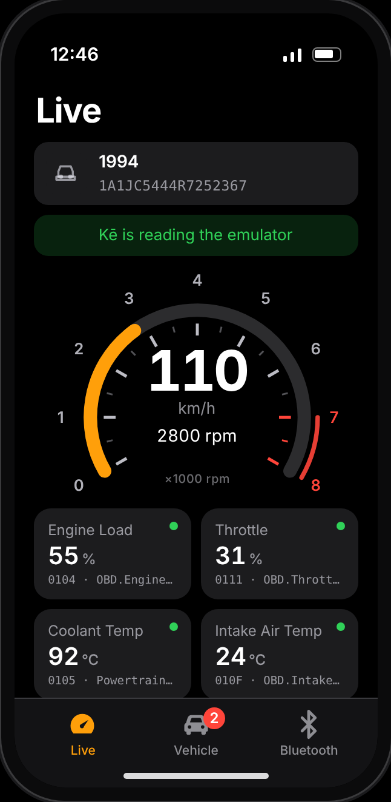
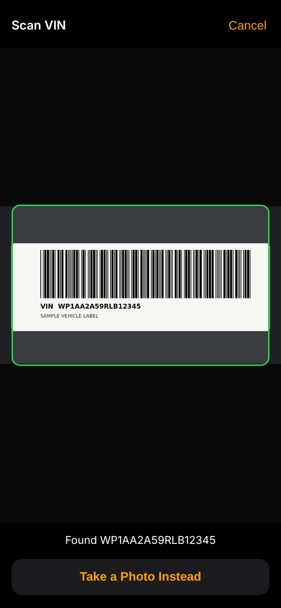
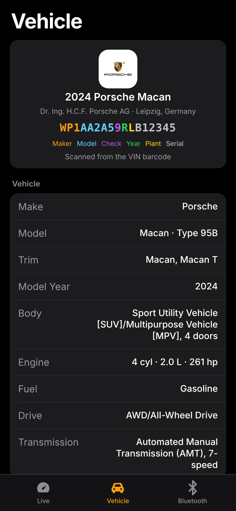

OB
Emulator Desk
A Mac control panel for the Freematics OBD-II Emulator MK2
App v2.7
Document v2.7
Emulator Desk drives a Freematics MK2 emulator from Google Chrome over its USB cable, so a Mac can do what the Windows-only Freematics GUI does. You set live engine values, the VIN, the bus protocol and trouble codes, and any OBD-II dongle or scan tool plugged into the emulator reads them as if it were in a real car. It runs from a web page, with nothing to install, and follows Apple's Human Interface Guidelines in light and dark mode.
 Live data
Live dataTen sliders for the common Mode 01 values, with presets from Parked to Overheat. Values go out as you drag.
 Vehicle and codes
Vehicle and codesProtocol, VIN and up to six trouble codes. Tap a car maker to load a sample VIN; the car and its logo show above.

Kē phone viewA phone with a tab bar. Live has an rpm gauge with redline, Vehicle decodes or scans a VIN, Bluetooth shows the link and what the dongle supports.
6
driving presets plus a drive loop
7
bus protocols to choose from
1
link to open it, nothing to install
On your phone
phone.html in Bluefy calls the dongle the Kē, connects from the Live tab, reconnects if it drops, keeps the screen on and can scan a VIN barcode.
Dongle over Bluetooth
Any connected ELM327 dongle shows as the Kē, with its real Bluetooth name underneath. Vehicle decodes the VIN it reads and shows the car's logo.
Good to know
Sliders read back the emulator's values on connect. Its firmware can't report its VIN, so the VIN box fills in from the dongle.
Engine sound
Flip the Engine Sound switch and a flat-six plays, built from single cylinder firings. It thumps at idle, howls near redline and crackles on lift-off.
OB
Emulator Desk
Appearance, car logos and the VIN scanner
App v2.7
Document v2.7
Light mode. The switch beside Engine Sound picks Auto, Light or Dark, and the choice is remembered. Here a sample Porsche VIN is loaded, so the Vehicle panel shows the car and its logo.

Scan VINThe barcode button beside Decode opens the camera and reads the door-jamb or windshield barcode on its own.

Decoded carDecoded straight away: logo, model, year and plant, then engine, body and drivetrain from NHTSA.
How scanning works
It reads Code 39, Code 128, Data Matrix, QR and PDF417, drops the leading "I" that door-jamb labels add, and prefers a VIN whose check digit is valid. A barcode that isn't a VIN gets a hint instead of a wrong result.
No live camera?
If the browser can't show the camera, or access is off, Take a Photo opens the camera app or photo library and the photo is read instead.
Car logos
Logos always sit on a white tile so they read in both modes. If one can't load, a plain car symbol shows.
OB
Technical setup
Sources, integrations and what runs where
App v2.7
Document v2.7
Sources and libraries
| Piece | Version | What it does | Loaded from | Licence |
|---|
| Emulator Desk | 2.7 | The whole app: UI, command queue, PID encoding, presets, drive loop, engine sound, dongle check, VIN decoder | index.html and phone.html on GitHub Pages | Written for this app |
| Freematics AT command set | EMULATOR-OBDII V3 (tested) | Commands the app sends: ATE0, ATZ, ATSET, ATGET (PIDs), ATCLR DTC | Built into the emulator | Freematics |
| OBD-II PIDs and VSS names | SAE J1979; COVESA VSS 4 | Each value is tracked by its VSS name (e.g. Vehicle.Speed) and fetched by its PID, with byte encodings such as RPM × 4 | Hard-coded in the app | Public standard |
| barcode-detector (with zxing-wasm) | 3.2.3 (zxing-wasm 3.1.6) | Reads VIN barcodes where the browser has no built-in barcode reader (Safari, Bluefy) | jsDelivr CDN, loaded only when you first tap Scan | MIT; ZXing C++ Apache-2.0 |
No other libraries or web fonts; type is the system font.
Integrations
| Integration | Used for | Details |
|---|
| Web Serial API | Talking to the emulator | navigator.serial.requestPort() filtered to CP2102 and CH340 USB chips, 38400 baud, 8N1. You pick the port in Chrome's chooser. |
| Freematics OBD-II Emulator MK2 | The device controlled | USB serial through a CP2102 or CH340 chip, drivers built into macOS. Needs its 12V adapter. |
| Web Bluetooth | Reading the dongle | navigator.bluetooth.requestDevice(), you pick the dongle. Finds a notify and a write characteristic (FFE0, FFF0, 18F0 and similar) and sends ELM327 commands for setup, capabilities (AT@1, 0100–0160, 0900) and live polling, in 20-byte chunks. |
| NHTSA vPIC | VIN details | vpic.nhtsa.dot.gov/api/vehicles/DecodeVinValues/{VIN}?format=json, no key. Sends only the VIN. Maker, country, year and check digit decode offline. |
| Camera and BarcodeDetector | Scanning a VIN barcode | getUserMedia with the rear camera; frames go to BarcodeDetector or zxing-wasm every 180 ms, with a photo picker as fallback. Images never leave the phone. |
| Asetrix logos API | Car maker logos | api.asetrix.online/api/v1/logos/{make}, free, no key. Sends only the make name, such as "porsche"; returns a PNG. |
| Web Audio API | Engine sound | An AudioWorklet flat-six model with exhaust resonators, muffler filter and compressor. Starts only when you flip the switch. |
| GitHub Pages | Hosting | davidanthonyalleyne-dot.github.io/emulator-desk, served from the main branch of the public emulator-desk repo. Static files only. |
What runs where
On the device: everything. The page runs in Chrome or Bluefy and sends one emulator command at a time.
Network: the page itself, NHTSA per new VIN, a logo per make, and the barcode reader on first scan.
Data kept: two browser settings, edTheme (appearance) and ed.lastDongle (phone). Values, VIN and codes stay in the page and on the emulator.
Demo mode: add ?demo to try it without hardware. The screenshots use it with a sample VIN and label. node shoot.js retakes them; node pdf.js prints this PDF.